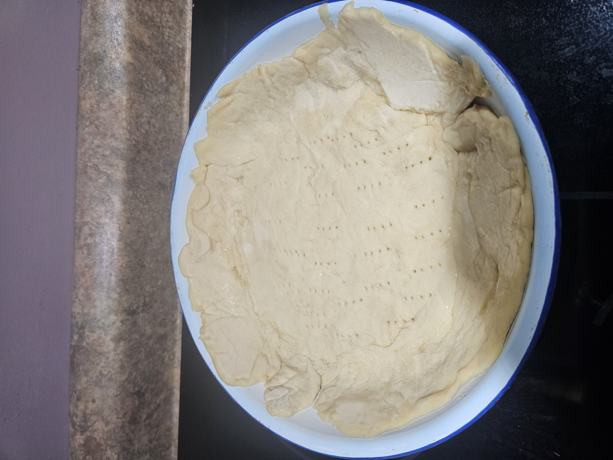

Pie Crust

Ingredients
- 6 1/2 – 7 Cups of Pastry Flour
- 1 lb lard
- 1 teaspoon Baking Powder
- 2 Tablespoons of Brown Sugar
Instructions
- Mix ingredients well
- Beat 1 egg in a cup with 2 Tablespoons of Vinegar. Fill cup with cold water and add to pastry mixture
- Pie crust should be fairly thin (<1/4″)
- Bake crust in pie shell at 425 for 15-20 minutes (or until light brown)
- Rollie Pollies
- Flatten Out leftover Dough/crust
- Cover in Margerine/butter
- put brown sugar and cinnamon on top of butter
- roll into a log
- Cut into bite sizes pieces
- Bake in an empty pie plate